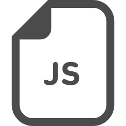

コロナ禍でほとんどがオンラインでの授業に100万以上の学費を費やしていることに不満と疑問を持ち、落ち着いて本来の授業が受けられるまでの間、自分の経験に時間を使いたいと思い休学中。
HTML,CSS,JavaScript,SQL,Photoshop,Python,Unity,C#,Swiftなどの基礎知識を学習して、どれが自分のやりたいことに近いのかを考えた結果、現在はHTML,CSS,JavaScript,Pythonに絞って日々学習をしています。
しかし、知識をいくら詰め込んでもそれを利用する方法をまだ経験していないので、この場を機に多くの経験を詰もうと意気込んでいます。また、フロントエンド、バックエンドでの仕事を探していますが、まだ大学生なので自分の将来のためになると思うことには何でも噛み付いて経験にしていこうと思っています。
好きな言葉は「死を想え」
常にいつ死んでしまっても後悔のないように一日一日を大切にしています。
学習時間：約１００時間
学習時間：約８０時間

学習時間：約４０時間
今後、現代社会において、AIによる仕事の代替が大幅に増えています。それは、予想とかの話ではなく、進行形で、そして加速的に進んでいます。しかし、プログラミングという分野は決してなくならないと思っています。理由は明確で、人はモノに頼って生きていく生き物だからです。どれだけ文明が発展しても、人がいる限りモノは無くならないのです。そして、同時にモノを売る仕事もなくならないと思います。プログラミングというのは、モノを作ることも売ることもできる武器。１６の時にそう思った僕はプログラミングに興味を持ち、マークアップ言語に手を出しました。一つの「モノ」（サイト、広告、LP.etc）を作り、それを誰かが見て「モノ」を欲しいと思う。作ることと売ることを同時にできる。そんなところに惹かれて将来を決めました。